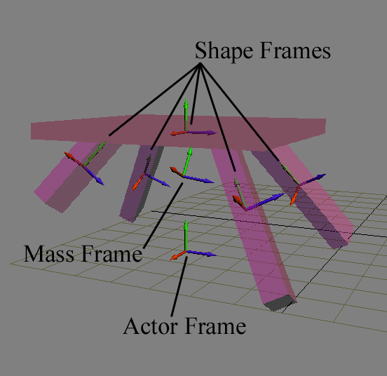

The most important property of an actor is its pose (position and orientation) in the world. Because the SDK provides a good deal of flexibility in this area, it is important to understand some spatial relationships involved.
For example, suppose we would like to simulate a table. The table is modeled in 3d software using a rectangular table top and four rectangular legs. The table will be an art asset for a computer game, and it will be instanced and placed at various spots using a level editor.
Both high detail geometry and bounding boxes for the table top and legs are exported from the 3d software (either manually or automatically). The physics SDK is not concerned with the graphical representation, but the bounding boxes will be instanced in the SDK as shape objects. The image below shows what the table may look like in the game editor, along with its significant reference frames.

NOTE: To make things more interesting, our table has a large chunk cut from one leg.
The space in which all the actors are positioned is called the world or global space. A space is also sometimes called a frame or reference frame.
The actor object corresponding to the entire table has its own frame, the actor frame. This is also known as the local space of the actor. The actor frame is defined so that when placed at zero height in the world, the legs of the table touch the floor, making it easy for people editing the level to place tables in a simple way, eventually using the editor's snap-to-grid functionality to make sure the table is at a correct height. In other words, actor frames can be randomly placed and are usually chosen with other practical or artistic considerations in mind.
In regards to collision detection, the table is made up of five bounding box shapes. These have fixed poses relative to the actor frame. At its origin, defined as center, each box has its own local frame called the shape frame, oriented along the primary axis of the box. Other types of shapes have similar local frames defined. For example, the local frame of a triangle mesh is the space in which the triangle vertices are defined (which can otherwise be arbitrary).
Given the placement of shapes, the SDK computes the actor's center of mass, assuming it is dynamic. (You may manually specify a center of mass if preferred.) The center of mass is the point around which real physical objects rotate unless they are constrained in some way. The center of mass may have an orientation which is not always the same as that of the actor frame. In our example, the table is missing half of a leg. This makes the mass distribution a bit asymmetric, physically expressed by the center of mass frame's rotation. The center of mass frame is often abbreviated to body or mass frame. The center of mass pose is stored relative to the actor frame.
The NxActor methods,
void setGlobalPose(const NxMat34&);
void setGlobalPosition(const NxVec3&);
void setGlobalOrientation(const NxMat33&);
void setGlobalOrientationQuat(const NxQuat&);
serve to position the actor frame in world space, and the corresponding get*() methods retrieve it.
Note that the method,
const NxMat34& getGlobalPose()const
is normally the most convenient way to obtain the actor's transform for rendering. This can then be sent to OpenGL (or similarly to Direct3D) through the following:
float glmat[16];//OpenGL matrix.
actor->getGlobalPose()->getColumnMajor44(glmat);
glMultMatrixf(glmat);//Send to OpenGL.
The methods,
void setCMassOffsetLocalPose(const NxMat34&);
void setCMassOffsetLocalPosition(const NxVec3&);
void setCMassOffsetLocalOrientation(const NxMat33&);
set the mass frame's pose relative to the actor frame, or in other words, determine the actor's center of mass. This is computed and defaulted by the SDK to the correct values based on the mass distribution of the actor's shapes. You may instead use the follwing method to set the mass center's frame relative to the global frame:
void setCMassOffsetGlobalPose(const NxMat34&);
void setCMassOffsetGlobalPosition(const NxVec3&);
void setCMassOffsetGlobalOrientation(const NxMat33&);
To set the pose of the component boxes (or other shapes) relative to the actor frame, the following methods of NxShape may be used:
void setLocalPose(const NxMat34&);
void setLocalPosition(const NxVec3&);
void setLocalOrientation(const NxMat33&);
Setting the position of an object directly is sometimes unavoidable (most commonly at the start of a simulation, or if you want to 'teleport' an object to a different place), but may also be convenient.
The SDK does not prevent you from setting the poses of constrained objects. For example, if you had a linked chain of bodies, and added a certain value to the bodies' positions, the simulation would continue without problem. However, if you changed the position of only one body, the simulation would try to fix the constraint error you have inadvertently introduced by applying huge forces to the bodies during the next time step. This may lead to the simulation failing or the scene 'exploding'. To summarize, setting the pose of objects directly is not necessarily a bad thing, just watch out that you don't accidentally pull joints apart or put bodies into each other - your collision detection system won't like it.
NOTE: When specifying the orientation, there is no performance difference between the quaternion or the matrix representation, as the SDK uses both formats internally.